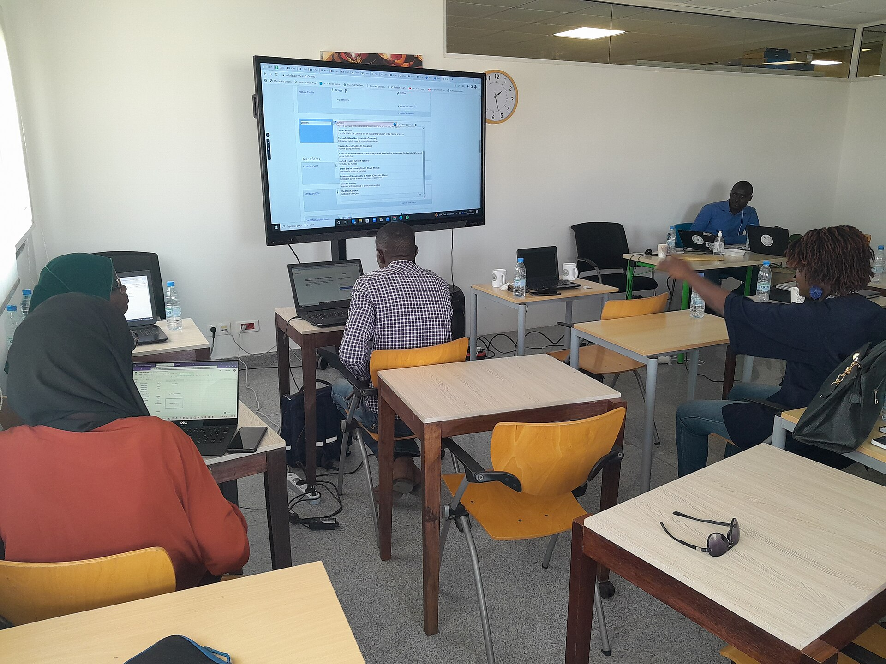
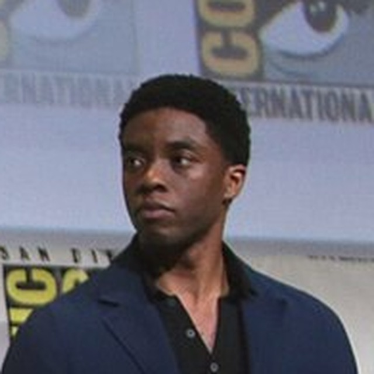
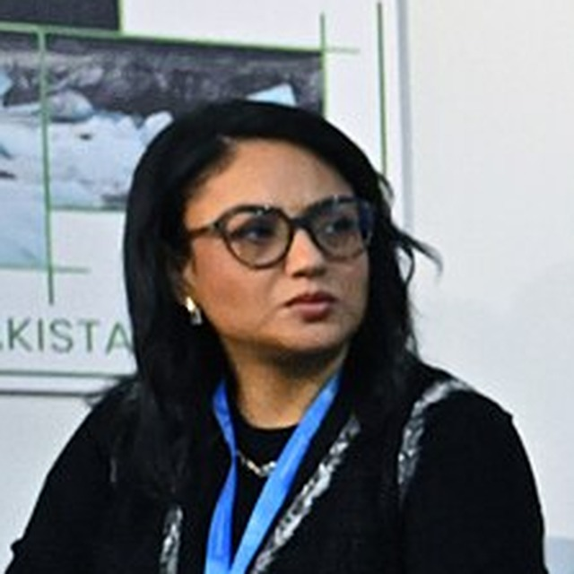

MAQUETTE · PHOTOS ILLUSTRATIVES
DEMO DAY FINALE
JAMBAARS AI
La deuxième cohorte termine son parcours d'accélération : les dix startups IA sélectionnées présentent leurs produits devant un panel d'investisseurs et de partenaires technologiques.

Bintou BaDirectrice, Orange Digital Center

Seydou KaChargé de partenariat, MCTN

Yacine FallResponsable programme JAMBAARS AI
Vendredi 20 Novembre 2026 · 10h00
CONCREE Hub, Dakar
Restez connectés
aux temps forts
aux temps forts